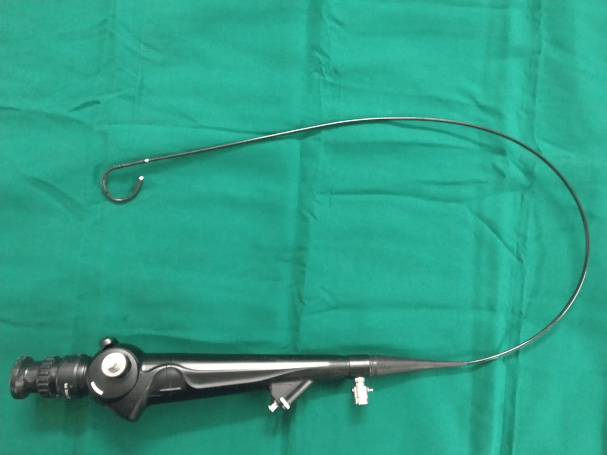
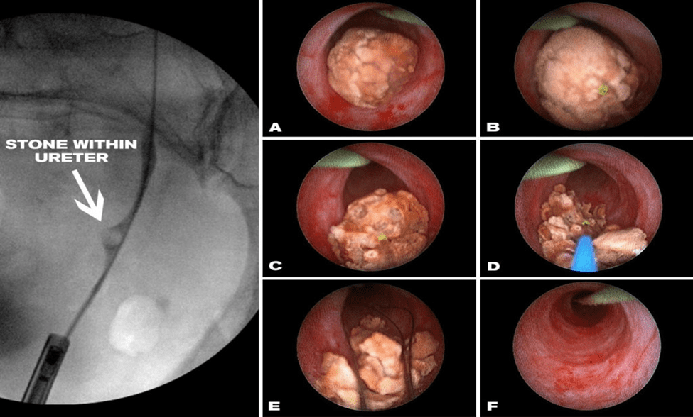
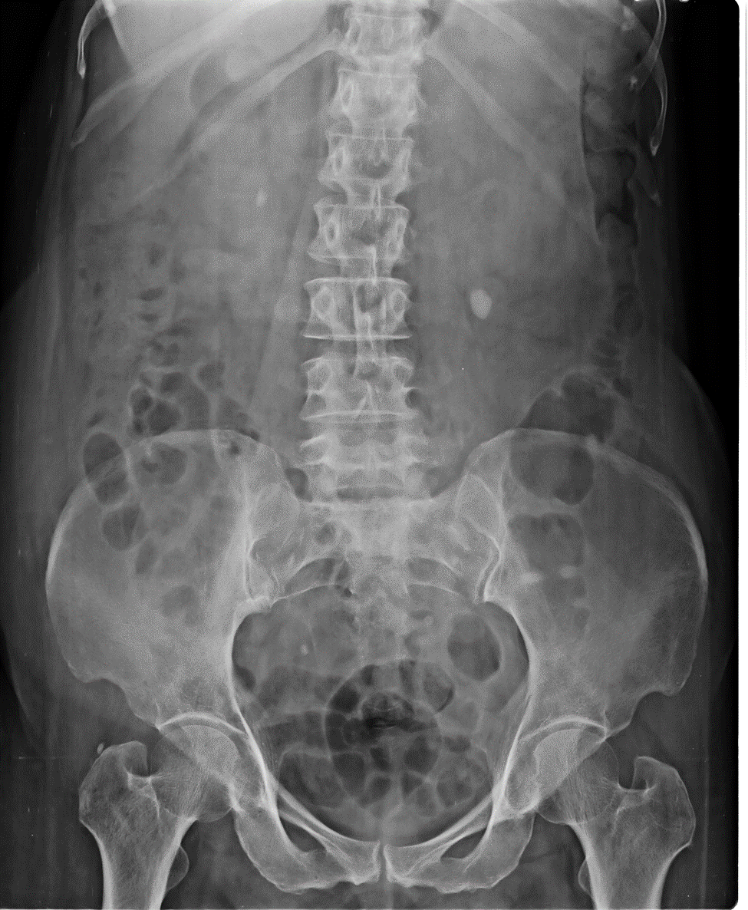
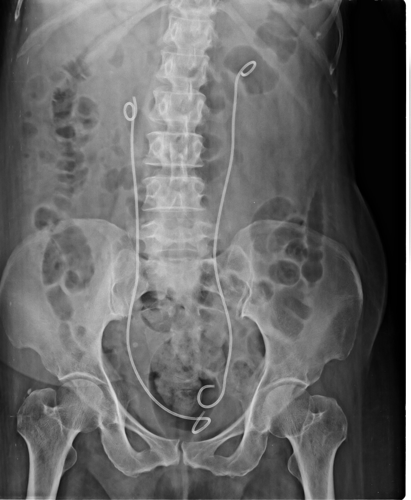
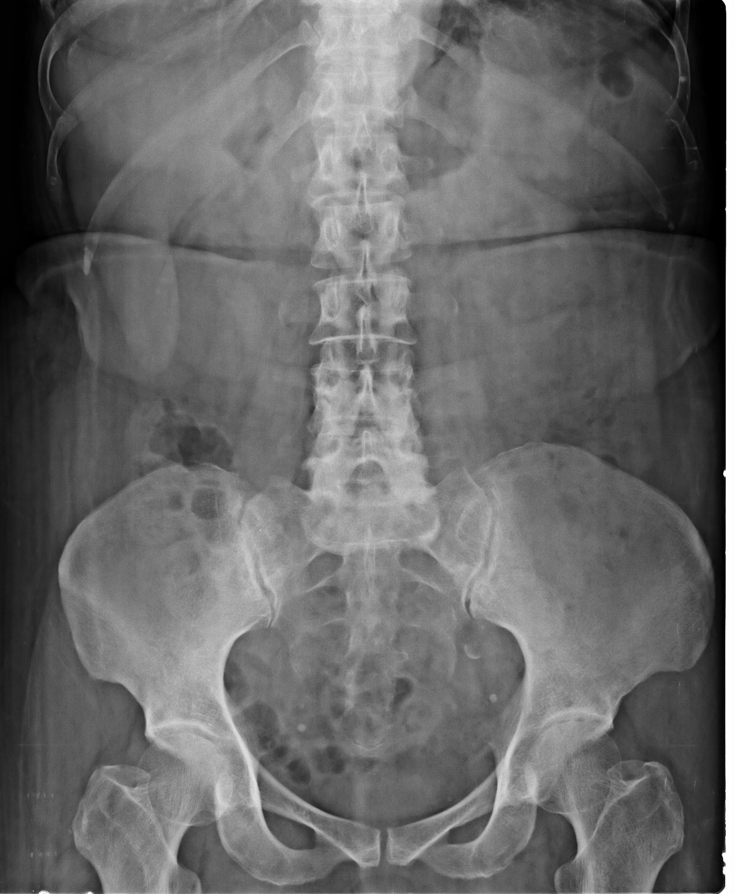

TREATMENT FOR URINARY TRACT STONE
ENDOSCOPIC LASER LITHOTRIPSY
URETERORENOSCOPY/RIRS
Retrograde Intra Renal Surgery ( RIRS )
FLEXIBLE URETERORENOSCOPY HOLMIUM LASER
RIRS is performed with flexible Ureteroscope, one of the newer modalities used for clearance of Renal Calculus & Transmonal Cell Tumors of Kidney. Laser is used to fragment the Calculus & Fulgurate Tumors. More than 1500 cases of RIRS have done in the past 10 years.
Flexible Uretroscope

Most modern Holmium Laser machines are available. Fine endoscopic equipments are passed in to the urinary tract, laser energy is focussed directly on to the stonesthrough fine probes (as small as a twine thread ) and stones are pulverised in to dust like particles and washed out. Along with breaking of the stones, any obstruction or narrowing in the urinary tract can also be removed by this technique, at the same sitting. After these procedures, usually a stent may have to be placed for varying peiods depending on the kidney function, presence of infection etc,. Stents will require removal by endoscopic procedure after a few days or weeks. these procedures will require admision in to the hospital far a few days only if at all required.

X Ray Showing Bilateral Uretric Calculus

X Ray Showing Post Lithotripsy Picture with Bilateral DJ Stent

X Ray Showing Post Stent Removal Picture
